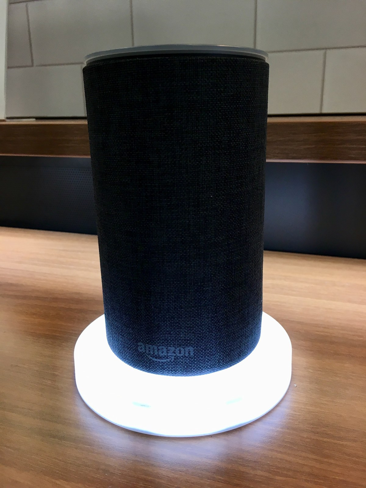

The Autopsy Report · Device #025
The Amazon Echo, Second Generation
The Echo that grew a wardrobe: shorter than the original, wrapped in fabric, and eighty dollars cheaper. This is the public-records edition — and an unusually thin one: the board's exact silicon is still unverified in public sources.
What is this thing?
The second-generation Amazon Echo is a full-size smart speaker: a fabric-covered cylinder with Alexa inside, seven microphones for far-field listening, and a speaker big enough to fill a room. Announced alongside a wave of other Echo hardware, it replaced the tall black tube of the 2014 original with something designed to be seen — swappable fabric and wood-finish shells included. GeekWire
The model number is XC56PY, filed with the FCC under ID 2ALWB-7232 (grantee: S&R Land LLC, one of Amazon's filing entities). FCC filing
Whose box is this?
Not ours — not yet. No unit of this device is on our bench. We haven't bought one, opened one, photographed one's insides, or listened to one boot. Everything on this page comes from public records: iFixit repair guides, launch coverage, and a freely-licensed stock photo credited below. When a unit lands on our bench, this report gets a second edition with our own photos, measurements, and boot log.
A short history
- November 2014Amazon launches the original Echo — a tall black cylinder — and accidentally invents the smart-speaker category. GeekWire
- September 27, 2017Amazon announces the second-generation Echo at $99.99 — $80 less than the original — with a shorter body, fabric shells, improved microphones, and Dolby audio processing. It ships October 31. GeekWire
- September 2017The FCC grant for 2ALWB-7232 issues, with internal photos held under 180-day confidentiality (public by March 2018). FCC filing
- 2018 – 2019iFixit publishes board-level repair guides for the microphone board and the amplifier board — the best public look at the internals to date. iFixit mic-board guide iFixit amp-board guide
The outside
A short fabric-wrapped cylinder — noticeably squatter than the original Echo — with the light ring on top, volume and mic-mute buttons, a 3.5 mm audio output, and a power jack on the back. The fabric shells were the headline: charcoal, heather gray, and sandstone at launch, with wood-veneer finishes sold separately. GeekWire

The board
We haven't held this board ourselves, and the public record here is thinner than we'd like. iFixit's repair guides document two main boards: a microphone board carrying the mic array, and an amplifier board with the audio output stage — both replaceable as modules. The guides show board photography but do not resolve every chip marking, and no published teardown we could find names the exact application processor or memory for this revision. iFixit mic-board guide iFixit amp-board guide
So we say it plainly: the exact chip markings for the 2nd-gen Echo board are unverified. No chip table on this page names silicon we can't source — that's the rule, and this device is why the rule exists.
Under the microscope: the chips
There is no chip table on this page — and that's deliberate. No public source we've reviewed documents the exact-revision chip markings for the XC56PY board, so we won't fill the table with guesses or with silicon from other Echo models. What the public record does establish:
- Two-board construction — a microphone board and an amplifier board, documented with photography in iFixit's repair guides. iFixit mic-board guide iFixit amp-board guide
- Seven-microphone array for far-field voice pickup — part of the launch specification. GeekWire
- Model XC56PY tied to FCC ID 2ALWB-7232, with internal photos in the public filing. FCC filing
The moment a unit reaches our bench — or a credible public teardown names the silicon — the chip table goes in with sources attached.
The government's file on this box
The second-gen Echo's FCC filing sits under FCC ID: 2ALWB-7232, with the grant dated September 27, 2017 — the same day as the public announcement. Internal photos were filed under 180-day confidentiality, expiring March 2018, so the public has been able to inspect the board photography for years. FCC filing
Listening to it boot
We haven't — there is no unit on our bench, so there is no boot log, no serial capture, nothing. That section gets written the day one arrives.
Our rule for debug ports, whenever we do meet this hardware: we listen, we don't knock. If the board exposes a serial console, we'll connect a read-only listener and record what the device volunteers about its own startup — and publish that. We won't use it to break in, dump firmware, or bypass anything. Whether this board exposes a console is currently unknown — it awaits the bench.
What we found
The most honest finding on this page is a gap. The 2nd-gen Echo sold in the millions, yet its exact board-level silicon remains undocumented in the public sources we reviewed — a reminder that popularity doesn't guarantee teardown coverage. The iFixit guides are the best public window into the hardware, and they're repair guides, not chip inventories. iFixit troubleshooting wiki
The $99.99 price was the real story of the launch. Amazon cut eighty dollars off the original's price while adding fabric shells and better mics — the moment the smart speaker stopped being a gadget and started being furniture. GeekWire
What we didn't do
- This device is not on our bench. We have not disassembled one.
- We captured no boot log and ran no bench tests.
- We have not touched, extracted, modified, or shared this device's firmware.
- We have not probed any debug interface on it.
- We did not guess at chip identities — the chip table stays empty until sources exist.
- The product photo above is a freely-licensed stock image, credited in its caption — not our photography.
By the numbers
- Model: Amazon Echo 2nd gen (2017), XC56PY
- FCC ID: 2ALWB-7232 (grant September 27, 2017)
- Microphones: Seven-mic far-field array
- Boards: Separate mic board + amp board (per iFixit guides)
- Launched: September 27, 2017, at $99.99; released October 31
- Exact silicon: Unverified in public sources — awaits the bench
Words to know
Every term this page uses, in plain English. No prior knowledge required.
- Smart speaker
- A speaker with a voice assistant built in — it listens for a wake word, then answers, plays music, or controls your home.
- Far-field microphones
- A ring of microphones designed to hear your voice from across the room, even with music playing.
- System on a chip (SoC)
- The whole computer — processor and friends — on one piece of silicon.
- Boot log
- The text a device prints as it starts up. Engineers read it to see what's inside without opening anything.
- UART / serial console
- A simple port that lets you watch a device narrate its own startup, line by line.
- Firmware
- The software baked into the device — the part that runs before anything else.
- FCC
- The Federal Communications Commission — the U.S. agency that regulates anything that transmits radio. Every wireless gadget sold here has to pass its tests first.
- FCC ID
- The ID the FCC assigns to each approved wireless product. The first few characters are the company's grantee code; the rest is the maker's model code. Punch it into fccid.io and the whole public filing comes up.
Sources & confidence
- Launch details (date, price, release, features): contemporaneous launch coverage. High confidence.
- Two-board construction: iFixit repair guides with board photography. High confidence.
- FCC ID, model, grant date: the public filing record. High confidence.
- Exact chip markings: unverified — no public source reviewed names them, so none are named here. This is the page's known gap.
- Anything not listed here is unknown until the bench says otherwise. We'll say so, out loud, when that's the case.
Public-records edition — thin sources. This device is not on our bench. No disassembly, no boot log, no bench testing, and no firmware touched, extracted, modified, or shared. The stock photo is freely licensed and credited in its caption.
Legal note. BareBoard is an educational project. Everything on this page is assembled from public records and freely-licensed photography credited in its caption. We don't publish, host, or distribute firmware, keys, passwords, or credentials. Product names and trademarks belong to their respective owners and appear here only to identify the hardware. If you believe anything here infringes your rights, contact us and we'll address it promptly.